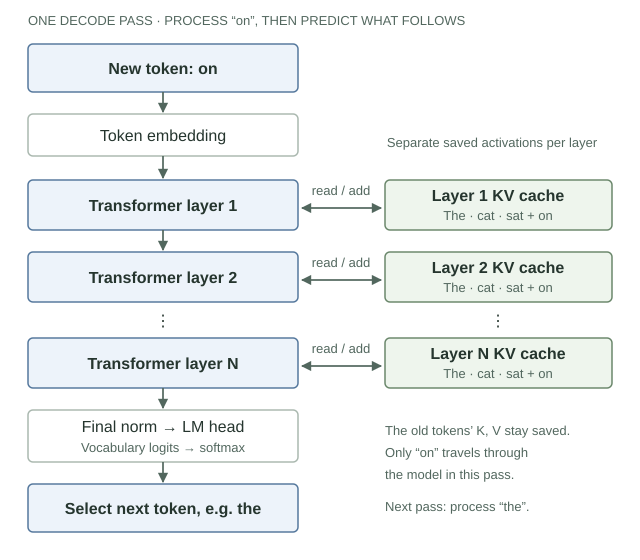
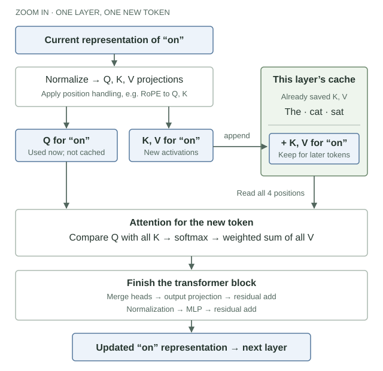

Machine learning · History, mechanics, and practice
From Language Models to AI Assistants
An intuitive guide to transformers: why they emerged, how they work, and what surrounds them.
You type a question. An answer appears, a little at a time. Between those two events are several different inventions: a way to represent language, an architecture for combining context, a training process, and software that may retrieve documents or run tools.
Understanding the whole system starts with separating those pieces. A transformer is an architecture. A language model assigns probabilities to sequences of tokens. An AI assistant is an application built around a model and other components. The names are connected, but they are not interchangeable.
This guide follows three questions: what problems led us here, what happens during one prediction, and how that prediction becomes part of a useful system. We will spend most of our time on causal, decoder-only language models, then place other designs alongside them.
The examples use small, invented numbers so the calculations are visible. They are illustrations, not measurements from a particular model. A little familiarity with vectors helps; the arithmetic will stay small.
Part I
How we got here
Each idea answered a practical limitation. These developments overlapped; adoption did not happen in one clean sequence.
1. Counting phrases—and the problem of combinations
Consider the unfinished sentence The cat sat. What might come next? One approach is to look through a corpus and count what followed similar phrases.
An n-gram language model predicts from a fixed, short history. A trigram model uses the previous two words: after cat sat, how often did on appear? Smoothing and backoff techniques give sensible probabilities when counts are scarce. These models were useful components in speech recognition and statistical translation systems.
The difficulty is the number of possible combinations. Even a large collection cannot contain every useful phrase. A model may have seen dog sat on many times while rarely seeing cat sat on. Treating these contexts as separate entries makes it hard to share what they have in common. A short window also misses clues farther away.
Neural language models offered a way to share information through learned representations. An embedding represents a word or token with a vector of numbers. A network can learn patterns that apply across related vectors, so a new combination need not be completely unfamiliar. Bengio and colleagues’ 2003 neural probabilistic language model is an influential example, not the beginning of all neural-network research.
This changed the question from “have we counted this exact phrase?” to “what can the learned representation tell us about it?” Early feed-forward neural language models still commonly used fixed context windows. Better representations did not, by themselves, solve sequence memory.
2. Carrying information forward
A recurrent neural network (RNN) processes a sequence step by step. At each position, it combines the new input with a hidden state carried from the previous position. That state is a learned numerical summary, not a literal copy of the words.
state 1→cat
state 2→sat
state 3
This allows a model to use a variable-length history. But basic RNNs struggle to learn some long dependencies: gradients can shrink or grow as they pass through many steps. Long short-term memory (LSTM), introduced in 1997, and the later gated recurrent unit (GRU) use gates to control what information is retained or updated. They improved the handling of memory; they did not make the sequential dependency disappear.
For training, that dependency matters. Before computing the state after sat, a recurrent layer needs the state after cat. Hardware can parallelize many operations and examples, but this chain limits parallel work across positions within that layer.
Translation added another pressure. In a basic encoder–decoder system, one network reads a source sentence and another generates the translation. Early versions compressed the source into a fixed-length representation. The decoder had to produce the whole translation from that summary.
Attention gave the decoder a different option: retain representations at multiple source positions and consult a weighted mixture of them for each output step. The model could draw on different source words as it translated. This is the motivation in Bahdanau and colleagues’ attention-based translation work, posted in 2014 and presented at ICLR 2015.
Historical anchors: LSTM (1997), RNN encoder–decoder and gated units (2014), and sequence-to-sequence learning (2014).
Attention predates the transformer. It first became influential in systems that still used recurrence. The transformer reorganized the architecture around attention.
3. The transformer—and a second change in how models were used
The 2017 transformer paper presented an encoder–decoder architecture for sequence transduction, demonstrated on translation. It used attention and position-wise feed-forward networks without recurrent layers.
Within an attention layer, positions can directly draw information from other permitted positions. Training no longer requires the same position-by-position recurrent state updates. This fits parallel hardware well. The tradeoff is that standard full attention considers pairs of positions: its attention work grows quadratically with sequence length.
That architectural shift overlapped with a change in workflow: pretrain a reusable model on broad data, then adapt it to tasks. Pretraining was not invented by transformers. For example, ULMFiT (2018) demonstrated effective language-model fine-tuning using a recurrent architecture.
BERT (2018) helped establish bidirectional transformer pretraining for language understanding. GPT-style models emphasized predicting the next token from preceding context. The GPT-3 paper (2020) demonstrated broad task performance from instructions and examples supplied in the prompt, without a separate gradient update for each task.
In practice, this helped shift development from building a separate trained system for each task toward adapting or prompting a shared model. Specialized systems remained useful. Architecture, data, hardware, optimization, and product design all contributed; no single paper explains the whole industry transition.
Now we can open the model and see what the architectural change actually means.
Part II
Inside one model
Follow one prediction, learn how its parameters are trained, then generate another token without repeating unnecessary work.
4. From text to a sequence of vectors
Our running prompt is The cat sat. To keep the diagrams readable, pretend each word is one token. Actual tokenizers may split words into pieces, include spaces in tokens, or operate with byte-level units. A token is a unit in the model’s vocabulary; it is not necessarily a word.
The tokenizer converts text to token IDs. These IDs are vocabulary indices. A larger ID does not mean a more important word. An embedding table uses each ID to select a learned vector.
- TextThe cat sat
- Token IDsIndices in a vocabulary
- EmbeddingsOne vector per position
- Transformer blocksRepeated contextual updates
- Output scoresOne score per vocabulary token
Two distinctions will matter throughout the guide. Parameters are the learned numbers defining the computation, including embedding entries and transformation matrices. They are often collectively called weights. Activations are the intermediate numbers produced when those parameters process a particular input.
During ordinary inference, the weights stay fixed while the activations change with the prompt. During training, an optimizer updates the weights. Providing a new prompt changes the computation’s inputs; it does not normally retrain the model.
The initial token embedding for cat is a learned lookup. Its representation after several layers also depends on the context it can attend to. “Embedding” sometimes refers to either kind of vector; here we will call the latter a contextual representation. Its coordinates are learned features, not a human-written dictionary of meanings.
5. Attention: deciding what information to combine
To predict what follows The cat sat, the final position needs useful information about the preceding words. Attention gives it a learned way to combine information across positions.
Each position’s current representation is transformed into three objects:
- Query (Q)
- A vector used to score which positions are useful to this position’s update.
- Key (K)
- A vector compared with a query to produce a compatibility score.
- Value (V)
- The information vector contributed when a position receives attention weight.
“What am I looking for?”, “what can I match?”, and “what can I contribute?” are useful memory aids. These are numerical roles, not literal questions or conscious intentions. Q, K, and V are learned projections of representations; nobody manually assigns a token a semantic key.
One small attention calculation
Consider one head at the last position, sat. For this toy calculation, its query is the scalar q = 1. Keys are also scalars; values have two coordinates.
| Position | Key | Score q × k | Attention weight | Value |
|---|---|---|---|---|
| The | 0 | 0 | ≈ 0.09 | (0, 1) |
| cat | 2 | 2 | ≈ 0.67 | (2, 0) |
| sat | 1 | 1 | ≈ 0.24 | (1, 1) |
First, compare. Multiplying the query by each key gives scores 0, 2, 1. With vector queries and keys, this comparison uses a dot product.
Then, normalize. Softmax exponentiates the scores and divides by their sum: exp(score) / sum(exp(scores)). That produces nonnegative weights summing to 1. The scores above give approximately 0.09, 0.67, 0.24.
Finally, combine. Multiply each value vector by its weight and add:
The result is a vector used to update the representation at sat. It is not the next word. In scaled dot-product attention, scores are divided by the square root of the key dimension before softmax. Our toy key dimension is 1, so that scaling changes nothing.
A head is one set of these query, key, and value projections. Multi-head attention performs several such computations and combines their results. Different heads can capture different patterns, but there is no guarantee that each learns one tidy human concept such as “grammar” or “subject.”
Self-attention draws queries, keys, and values from the same sequence. Cross-attention uses queries from one stream and keys and values from another, as in a decoder consulting an encoded source sentence.
An attention weight measures a contribution inside this calculation. It is not, by itself, a complete explanation of why the whole model produced an answer. Later transformations, other heads, and other layers also matter.
Two different distributions: attention weights are over input positions. Final output probabilities are over vocabulary tokens. A 67% attention weight on cat does not mean a 67% chance of generating cat.
6. Building a transformer from those parts
Attention answers one question: how should information be combined across positions? A working language model also needs order, restrictions on what each position can see, and transformations that turn the combined information into useful features.
Order and the causal mask
The cat chased the dog and The dog chased the cat contain the same words. Their order matters. Transformers therefore incorporate position information. The original design added positional encodings to embeddings. Rotary position embeddings (RoPE), used in many later designs, rotate query and key coordinates according to position, making their comparisons sensitive to relative offsets. Position methods differ; the common purpose is to make order available to the computation. The RoFormer paper describes RoPE.
A next-token model must also avoid looking ahead. A causal mask allows each position to attend only to itself and earlier positions. In The cat sat, the representation at The cannot use cat or sat; the representation at sat can use all three. During training, later tokens are present in the example, but the mask prevents using them to predict themselves.
One block, repeated many times
A typical decoder block alternates attention with a small neural network applied independently at each position. This second component is called a feed-forward network (FFN) or multilayer perceptron (MLP). Here those names refer to the same part. It uses learned transformations and nonlinear functions to turn a position’s current features into new ones.
x ← x + Attention(Norm(x))x ← x + MLP(Norm(x))The + is a residual connection, also called a skip connection. A sublayer contributes an update to a representation carried forward, instead of having to replace it completely. This supports information flow and makes deep networks easier to optimize.
Normalization controls the scale of the numbers entering or leaving a sublayer. LayerNorm and RMSNorm are common variants; their formulas differ. Neither means “turn the vector into probabilities.” That was softmax’s role in attention. The LayerNorm and RMSNorm papers explain their training motivations.
Across many blocks, the model repeatedly combines context and transforms features. The vectors carried through the residual connections are often called the residual stream. “Hidden state” is a broader name for an internal representation; in a transformer it need not mean the single recurrent memory we discussed earlier.
Encoder, decoder, or both?
| Architecture | Who can see what? | A natural use |
|---|---|---|
| Encoder-only BERT-style | Bidirectional attention across the input. BERT’s pretraining predicts masked tokens using surrounding context. | Representing a complete input for classification, retrieval, or labeling. |
| Decoder-only GPT-style | Causal self-attention: each position sees the preceding prefix and itself. | Continuing text, including instructions, answers, and code. |
| Encoder–decoder Original transformer, T5 | An encoder reads the source; a causal decoder cross-attends to those source representations. | Mapping an input sequence to an output, such as translation. |
These are useful design tendencies, not hard restrictions on tasks. “Decoder-only” is a historical architecture name: it does not imply that a separate, invisible encoder must exist. Our running example uses a decoder-only model.
7. From a representation to a prediction—and a learning signal
After the final block and normalization, the representation at sat is projected into one score for every vocabulary token. These scores are called logits. The projection is often called the language-model head or unembedding. Softmax converts the logits to a next-token probability distribution.
Suppose our toy model assigns on: 60%, beside: 25%, and all other tokens together: 15%. These are output probabilities. They are different from the earlier attention weights over The, cat, and sat.
During training, the corpus supplies the actual continuation. If the example is The cat sat on the mat, then the target after The cat sat is on. A standard loss is the negative logarithm of the probability assigned to that target:
Using natural logarithms, a probability of 0.60 gives a loss of about 0.51; a probability of 0.30 gives about 1.20. Assigning more probability to the observed target lowers this loss. This is cross-entropy loss for a single target token.
Backpropagation calculates how the loss changes with the parameters. An optimizer uses those gradients to adjust the weights, usually over batches of many examples. This can update embeddings, attention projections, MLPs, and the output projection together. Nobody manually labels a head “find the subject.” Useful internal behavior can emerge because it helps reduce the training objective.
Why training can process positions in parallel
The training sentence already exists. The model does not have to generate cat before learning to predict sat. It can receive the actual preceding tokens at every position, a practice called teacher forcing.
| Context available at a position | Target at that position |
|---|---|
| The | cat |
| The cat | sat |
| The cat sat | on |
| The cat sat on | the |
These are conceptual views of the positions in one sequence, not a requirement to run four separate forward passes. Causal masking allows their representations and losses to be computed together within each layer. Layers still depend on previous layers, and training still takes many optimization steps.
This is self-supervised learning: the data supplies its own targets. It does not mean the model learns without an objective or supervision signal. Predicting text rewards useful patterns, but the objective does not explicitly require every generated statement to be true.
Training changes the recipe; inference follows it. Training updates parameters using loss and gradients. Ordinary inference uses the resulting parameters to compute predictions for new inputs.
8. Generating another token—and why KV caching exists
At inference time, the true continuation is unknown. The model produces a distribution, and a decoding rule chooses a token from it. Greedy decoding chooses the highest-probability token. Sampling draws a token according to a distribution, so less likely options can also be selected.
Temperature adjusts the distribution before sampling: lower positive temperatures concentrate probability on high-scoring options; higher temperatures spread it out. Top-p sampling restricts sampling to a high-probability set whose cumulative probability reaches a chosen threshold. These control output selection, not factual confidence.
Suppose we select on. The sequence becomes The cat sat on. The model now predicts what follows this longer prefix, perhaps the, and repeats. This is autoregressive generation: generated output becomes input for subsequent predictions. Generation ends at a stopping condition, such as an end token or an output budget.
Prefill and decode are two phases of inference
Prefill processes the known prompt. Its positions can be processed together within each layer, much as in training, but without updating weights. The final prompt position supplies the distribution for the first generated token.
Decode then processes newly selected tokens to predict subsequent ones. In ordinary autoregressive decoding, the next input depends on the previous choice, so these generation steps are sequential.
A naive implementation could run the whole growing prefix through the model again at every step. But the representation of cat in a causal model cannot depend on a future on. For a fixed model, prefix, and position scheme, appending a token leaves the earlier computations reusable.
The cache stores the parts future tokens need
At each attention layer, save the earlier tokens’ keys and values. Together, these saved activations form the KV cache. For the new token, compute its query, key, and value. Compare its query with the available keys, then combine the corresponding values. Its new key and value become part of the cache for later steps.
Where the cache sits in the architecture
We have already processed The cat sat and selected on. Follow on down the left side of the first drawing. At each layer, it reads that layer’s saved K and V and adds its own. The words in the cache boxes label token positions; the stored contents are numerical vectors.

Now zoom into one layer. Only the new token needs a new query. Its new K and V join the saved K and V, so attention can combine information from all four positions.

Why not cache queries too? A query is used to calculate the update at its own position. Those old updates have already been computed. Future positions bring their own queries; they need the earlier keys and values.
The learned matrices that produce K and V are weights. The K and V vectors stored for this particular conversation are activations. Reusing those vectors saves computation; it does not teach the model new facts. Hugging Face’s cache explanation describes this mechanism in implementation terms.
| Pass | New input processed | Cached positions afterward | Next token selected |
|---|---|---|---|
| Prefill | The cat sat | 3 | on |
| Decode 1 | on | 4 | the |
| Decode 2 | the | 5 | mat |
Notice the timing: selecting on does not yet create its keys and values. Processing on in the following pass does. The cache grows with the processed sequence.
What caching saves—and what it costs
Caching avoids recalculating the old prefix’s layer computations. It does not eliminate attention to the prefix. With full attention, each new token still reads information across the cached history, so its attention work grows with the context length.
The saved computation costs memory. For a conventional full KV cache, storage is approximately:
× cached tokens × bytes per number
The 2 is for keys and values. For one sequence with 32 layers, 8 KV heads, a head dimension of 128, 8,192 cached tokens, and 2 bytes per number, this is 1 GiB of cache alone. Model weights and other runtime memory are additional. Longer conversations and more simultaneous requests increase this pressure; later we will see why sharing KV heads can help.
Three different kinds of “memory”: learned weights retain the effects of training; the context is the information available for the current computation; a KV cache reuses computations for a processed prefix. A product’s persistent memory is usually a separate storage-and-retrieval feature.
We have now followed the complete loop: text becomes vectors, blocks combine context and transform features, the output head produces token probabilities, a decoding rule chooses a token, and the next pass processes that token using cached work. The remaining question is how this mechanism becomes a useful assistant.
Part III
From model to useful system
The architecture explains a prediction. Data, additional training, retrieval, tools, and serving choices explain much of what the user experiences.
9. Learning language is a foundation, not the entire job
Pretraining: where broad capabilities begin
Pretraining establishes a reusable model from broad data. For our causal language model, the basic objective is next-token prediction. Learning to predict varied text can develop useful representations of syntax, facts, styles, code, and problem-solving patterns. How well those capabilities generalize depends on the training process and data.
Scale has several dimensions: the number of parameters, the amount and quality of data, and the computation spent training. These are related, but “more parameters” is not a complete recipe. The Chinchilla study (2022) investigated how to balance model size and training tokens under a fixed compute budget. Data composition, filtering, and duplication also matter; repeating low-quality material is not equivalent to adding useful coverage.
Scaling laws describe empirical relationships between resources and measured performance under particular conditions. They guide resource allocation. They are not guarantees that every capability, benchmark, or deployment will improve at a predictable rate.
Post-training: making a continuation model behave like an assistant
A pretrained model learns to continue many kinds of text. If prompted with a question, it might answer, continue a list of questions, or imitate an unhelpful exchange. Post-training is an umbrella for additional training that shapes behavior and capabilities after pretraining.
Supervised fine-tuning (SFT) trains on demonstrations of desired behavior, often instruction–response examples. In a common setup, the loss rewards predicting the demonstration’s response tokens given the instruction and preceding response tokens. The basic next-token machinery remains; the data and loss placement focus it on useful responses.
Demonstrations show one acceptable answer. Preferences provide another signal: given two answers, which is better?
| Approach | Learning signal | What distinguishes it? |
|---|---|---|
| SFT | Examples of desired responses. | Train the model to predict those response tokens. |
| Reward-model RLHF | Human preferences train a reward model; its scores guide reinforcement learning. | The language model generates responses and is updated toward higher reward, often with a penalty for drifting too far from a reference model. |
| DPO | Preferred and rejected response pairs. | Directly optimize a preference loss on the language model, using a reference model in the standard formulation, without a separately trained reward model or an RL rollout loop. |
RLHF means reinforcement learning from human feedback. The InstructGPT work (2022) is a prominent example of the demonstration → reward model → RL pipeline. Direct preference optimization (DPO) offers a different training procedure for preference data; see the DPO paper. These are not mandatory stages every model uses in this order.
Here, the language model acts as an RL policy: it assigns probabilities to next-token actions. PPO is one way to update that policy, not an alternative transformer architecture. For the RL concepts, see Policies, Values, and Planning.
A reward or preference is an imperfect measure of what we want. A model can learn to sound convincing, exploit a scoring weakness, or agree with a user when disagreement would be more accurate. Better scores require checking what the scoring process actually rewards.
Reasoning: separate training from computation at answer time
Suppose a question requires three calculations. Generating intermediate steps can place useful results into the context for later tokens. Chain of thought refers to such generated intermediate reasoning. The 2022 chain-of-thought prompting study showed benefits from providing worked reasoning examples for certain tasks and sufficiently large models.
But prompting for steps and training a model to solve problems are different interventions. Reinforcement learning with verifiable rewards (RLVR) can use signals such as whether a final mathematical answer matches a checker or whether code passes tests. The DeepSeek-R1 work provides one documented example of reasoning-focused RL. Checkable does not mean perfect: weak tests and flawed checkers can still reward bad solutions.
Test-time compute, also called inference-time compute, is computation spent solving a new request. It can mean generating a longer reasoning sequence, producing several candidates and checking them, or searching through possible solutions. These are distinct procedures. A model labeled “reasoning” does not necessarily run an explicit search tree.
More computation can improve results on some tasks, at the cost of latency and resources. It can also elaborate an error. A readable explanation should not be treated as a guaranteed account of why an answer was produced: research on chain-of-thought faithfulness has demonstrated explanations that omit factors influencing the answer. The model’s actual computation includes all the numerical operations we have just explored.
Three questions keep “reasoning” clear: how was the model trained, what intermediate content does it generate, and how does the surrounding system spend computation to check or improve an answer?
10. Add information, change behavior, or give the model a tool?
Imagine building an assistant that answers questions about an organization’s changing handbook. Several techniques might help, but they solve different problems.
Prompting and in-context learning
A prompt can include instructions, reference material, and examples of the desired output. Few-shot prompting supplies a few demonstrations in the context. The model can use those demonstrations while answering, a form of in-context learning. Despite the word “learning,” ordinary prompting does not update the weights. Remove the examples from a later request and they are no longer available in that request’s context.
Retrieval-augmented generation: put relevant material in reach
Retrieval-augmented generation (RAG) retrieves external material and makes it available to generation. For the handbook assistant, the application might find relevant sections, include them with the question, and ask for an answer grounded in those sections. Changing the handbook can then change the information supplied without retraining the language model. The 2020 RAG paper is an influential research formulation; deployed retrieval pipelines take many forms.
Retrieval may use keywords, vector similarity, or both. A retrieval embedding model represents a query and passages as vectors whose similarity helps find candidates. This is a different use of “embedding” from looking up the initial vector for one token. A passage embedding typically summarizes a whole passage through a trained model.
Finding a relevant passage does not ensure the generated answer follows it. The system can retrieve the wrong section, miss an exception, or cite a passage that does not support the claim. Evaluate retrieval and answer grounding separately.
Fine-tuning, LoRA, and distillation
Fine-tuning continues training from an existing model. It is useful when examples can teach a recurring task, output format, style, or behavior that prompting alone does not deliver reliably. It can also affect factual knowledge, but it is not a dependable database update mechanism for frequently changing documents.
Low-rank adaptation (LoRA) is a way to fine-tune efficiently. It freezes base weights and learns small, low-rank updates to selected transformations. Think of learning a constrained adjustment to a large matrix instead of optimizing every entry. It reduces the number of trainable parameters and associated training memory, while still requiring the base model. LoRA specifies how parameters are adapted, not what task or loss to use. See the LoRA paper.
Distillation trains a student to reproduce useful behavior from a teacher, using signals such as output probabilities or generated examples. The student is often smaller or cheaper to run. It does not receive a perfect copy of everything the teacher knows; the training signals and coverage limit what transfers. The distillation paper by Hinton and colleagues explains the teacher–student idea.
| Need | A reasonable first approach | What changes? |
|---|---|---|
| Explain the task or desired format | Prompting, with examples if useful | Current context |
| Use relevant, changing documents | Retrieval / RAG | External information supplied to generation |
| Learn consistent behavior from many examples | Fine-tuning, possibly with LoRA | Parameters or adapter parameters |
| Transfer behavior to a cheaper model | Distillation | The student’s parameters |
| Calculate, inspect, or act in another system | Tool use | Available operations and observations |
These approaches can be combined. The choice begins with the missing capability: information, learned behavior, or access to an operation.
Tools and agents: the model participates in a software loop
A model can generate a structured request such as “call this calculator with these arguments.” The surrounding application interprets that request, checks it, executes the tool, and returns the result as new context. The model can then use the result to continue. Writing a tool call and actually executing it are separate events.
- Model proposesA tool and its arguments
- Application executesThe permitted operation
- Result returnsNew evidence in context
- Model continuesAnswer, another call, or stop
Agent has no single universally enforced definition. Here it means a system where the model helps choose successive actions toward a goal, using observations from earlier actions. A fixed workflow may also call a model several times without giving it much control over the sequence. The ReAct paper is an influential example of combining generated reasoning and actions.
External results also create a boundary: a retrieved page may contain instructions, but it is still external content. Indirect prompt injection attempts to redirect a model through instructions embedded in material it reads; Greshake and colleagues demonstrated this in integrated applications. Distinguishing evidence from authorized commands and constraining tool permissions are system concerns, not problems solved by attention alone.
Similarly, an assistant’s “memory across conversations” often means software saves information and later retrieves it into context. That persistent store is separate from both the model’s weights and the KV cache.
11. Modern variants: identify the bottleneck each one addresses
Once the main mechanism is clear, new architecture and serving terms become easier to place. Ask what each changes: model capacity, supported inputs, arithmetic, memory movement, or the generation procedure.
Mixture of experts: more capacity without activating everything
In a common mixture-of-experts (MoE) transformer, some MLP sublayers contain several expert networks. A learned router selects a small subset for each token. This creates a distinction between total parameters and active parameters per token.
The experts are usually components within a model, not a panel of complete chatbots debating an answer. Sparse routing can provide more parameter capacity for a given amount of per-token computation, while adding memory, load-balancing, and communication challenges. Total parameter count alone therefore makes a poor cost comparison between dense and sparse models. The DeepSeek-V3 report documents one large MoE design.
Multimodality: sequences can represent more than text
A multimodal model handles more than one type of input or output, such as text, images, audio, or video. An image can be divided into patches and encoded as vectors. Audio can be represented through frames or learned units. Training teaches the system how those representations relate to language and other tasks.
One common design connects a visual encoder to a language model through a learned projection; other designs integrate modalities differently. An image is not necessarily converted into an English caption before the model uses it. The Qwen2.5-VL report gives a concrete vision–language architecture.
Understanding an image and generating one are also different tasks. Diffusion models learn a process that reverses progressive corruption, often generating an image by repeatedly denoising a representation starting from noise. That differs from our left-to-right text loop. A transformer can be the neural network inside a diffusion model: “transformer” names an architecture; “diffusion” names a generative approach. See denoising diffusion models and Diffusion Transformers.
Efficiency: several techniques, several different savings
| Technique | Main idea | Keep this distinction |
|---|---|---|
| KV caching | Reuse earlier keys and values while generating. | Saves repeated computation; stores more activations as context grows. |
| Grouped-query attention (GQA) | Several query heads share a smaller set of key/value heads. | Reduces KV storage and bandwidth. It changes the attention design. |
| FlashAttention | Reorganize attention computation to reduce costly memory transfers and avoid storing the full attention matrix. | Computes exact attention up to numerical effects; full attention’s arithmetic remains quadratic in sequence length. |
| Quantization | Represent weights and/or activations using fewer bits. | Can reduce memory and transfer costs; quality and speed depend on the method and hardware. |
| Batching | Process work from multiple sequences together to use hardware efficiently. | Higher throughput does not necessarily mean a lower response time for each user. |
| Speculative decoding | A cheaper process proposes several tokens; the target model verifies them together. | Exact acceptance-and-correction algorithms preserve the target sampling distribution. Speedup depends on proposal quality and overhead. |
Primary sources: GQA, FlashAttention, LLM.int8() quantization, and speculative decoding.
These improvements can coexist. An MoE model may also use GQA, quantized weights, and speculative decoding. They are not competing names for the same optimization.
Long contexts and alternatives to full attention
A larger context window allows more information to be supplied. It does not guarantee that every relevant detail will influence the answer reliably. Lost in the Middle demonstrated sensitivity to the position of relevant information in the models and tasks it tested. Long-context performance needs its own evaluation.
Architectures can also reduce or replace full attention. Sliding-window attention limits which previous positions a layer can directly consult. State-space models such as Mamba carry information through a compact state instead of retaining a full attention cache over all previous positions. Hybrid designs combine mechanisms.
These choices trade off computation, memory, and how past information remains accessible. Efficient state updates are attractive for long sequences; compressing history into a state creates a different information path from directly attending to stored positions. The transformer is a major design family, not a synonym for all modern AI.
12. What a convincing answer does—and does not—demonstrate
A high next-token probability means a token fits the model’s learned conditional distribution. It is not a calibrated probability that the answer is factually correct. Fluency, confident wording, and a plausible citation can all accompany an error.
Hallucination commonly refers to generated content that is false, unsupported, or inconsistent with the supplied evidence. The term covers several failures, so an evaluation should say which one it measures. A model inventing a source and a model misreading a retrieved source may need different fixes.
For a real application, evaluate the complete system on representative examples held apart from development. A useful score might measure correct answers, supported claims, successful tool outcomes, or task completion. Keep simpler baselines: a change is valuable when it improves the outcome you care about under a comparable budget.
Benchmark scores are evidence within a test’s scope. Training-data contamination, repeated tuning on the test set, and narrow coverage can make that evidence less informative. A system can perform well on a benchmark and still fail on your documents, language, tools, or unusual cases.
Measure resource costs alongside quality. Time to first token includes the wait before generation begins, often affected by prompt processing and queueing. Time per output token measures generation speed after that. Throughput, peak memory, and total response cost answer different questions. A technique can improve one while worsening another.
When something fails, locate the stage. Did retrieval omit the relevant passage? Did the model ignore it? Was the tool call wrong? Did the tool itself return bad information? Clear boundaries make improvements more targeted than treating the assistant as one indivisible intelligence.
A vocabulary that stays consistent
Some terms are synonyms in this guide. Others sound related but refer to different things.
- Parameters / weights
- Learned numbers defining the model. A checkpoint is a saved training or model state; depending on the format, it can also include configuration and optimizer state.
- Activations / hidden representations
- Numbers produced while processing an input. The residual stream is a particular sequence of representations carried through the blocks.
- Token / token ID / embedding
- A vocabulary unit, its index, and a vector representation. Contextual and retrieval embeddings are also vectors, but they are computed for different purposes.
- Attention head / language-model head
- An attention head performs a Q/K/V computation. The language-model head maps final representations to vocabulary scores. “Head” is overloaded.
- Q, K, V
- Query, key, and value vectors in attention. Their projection matrices are learned weights; the vectors are input-dependent activations. These Q and V names do not mean the action-value and state-value functions of reinforcement learning.
- FFN / MLP
- Here, two names for the feed-forward component applied at each position inside a transformer block.
- Logits / probabilities
- Raw output scores versus their normalized distribution after softmax. Attention and vocabulary prediction each use distributions over different objects.
- Context / context window / KV cache
- Available input information, its supported length limit, and cached intermediate computations for a processed prefix. None is automatically persistent memory across conversations.
- Pretraining / fine-tuning / post-training
- Broad initial training; continued adaptation of an existing model; and the umbrella for later training stages. SFT is one kind of fine-tuning and is commonly used in post-training.
- Inference / prefill / decode
- Using the model; processing the prompt; and processing generated tokens to continue the sequence. “Decoding” can also name the token-selection procedure, as in greedy decoding.
- Language model / LLM / foundation model
- A language model assigns probabilities to token sequences. An LLM is a large language model, with no universal size boundary. Foundation model is broader: a model trained for adaptation across tasks, potentially beyond language.
- Transformer / assistant / agent
- An architecture; an application that helps a user; and, in this guide, a system where the model helps choose successive actions. These describe different levels of the system.
Where to read next
The links throughout the guide point to primary papers and implementation documentation. For a focused second pass, read the original transformer paper for the architecture, the cache documentation for inference, and InstructGPT for the separation between pretraining and assistant post-training. The T5 study provides a broader view of transfer learning and encoder–decoder models.
The most useful habit is to place each new term at the right level. Is it an architecture, a training objective, a source of information, a generation procedure, or a system around the model? Once that question is answered, the mechanism and its tradeoffs become much easier to understand.